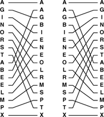
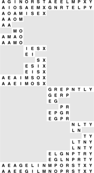
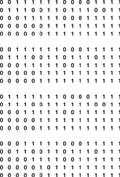

C++ Programming Robert Sedgewick - Princeton University Addison Wesley Professional Algorithms in C++, Parts 1–4: Fundamentals, Data Structure, Sorting, Searching, Third Edition C++ Programming Robert Sedgewick - Princeton University Addison Wesley Professional Algorithms in C++, Parts 1–4: Fundamentals, Data Structure, Sorting, Searching, Third Edition
11.1. Batcher's Odd–Even Mergesort
To begin, we shall consider a sorting method that is based on just two abstract operations, the compare–exchange operation and the perfect shuffle operation (along with its inverse, the perfect unshuffle). The algorithm, developed by Batcher in 1968, is known as Batcher's odd–even mergesort. It is a simple task to implement the algorithm using shuffles, compare–exchanges, and double recursion, but it is more challenging to understand why the algorithm works, and to untangle the shuffles and recursion to see how it operates at a low level.
We encountered the compare–exchange operation briefly in Chapter 6, where we noted that some of the elementary sort methods discussed there could be expressed more concisely in terms of this abstract operation. Now, we are interested in methods that examine the data exclusively with compare–exchange operations. Standard comparisons are ruled out: The compare–exchange operation does not return a result, so there is no way for a program to take action that depends on data values.
Definition 11.1. A nonadaptive sorting algorithm is one where the sequence of operations performed depends on only the number of the inputs, rather than on the values of the keys|
In this section, we do allow operations that unilaterally rearrange the data, such as exchanges and perfect shuffles, but they are not essential, as we shall see in Section 11.2. Nonadaptive methods are equivalent to straight-line programs for sorting: They can be expressed simply as a list of the compare–exchange operations to be performed. For example, the sequence
compexch(a[0], a[1])
compexch(a[1], a[2])
compexch(a[0], a[1])
is a straight-line program for sorting three elements. We use loops, shuffles, and other high-level operations for convenience and economy in expressing algorithms, but our goal in developing an algorithm is to define, for each N, a fixed sequence of compexch operations that can sort any set of N keys. We can assume without loss of generality that the key values are the integers 1 through N (see Exercise 11.4); to know that a straight-line program is correct, we have to prove that it sorts each possible permutation of these values (see, for example, Exercise 11.5).
Program 11.1. Perfect shuffle and perfect unshuffle|
The shuffle function rearranges a subarray a[l], ..., a[r] by splitting that subarray in half, then alternating elements from each half: Elements in the first half go in the even-numbered positions in the result, and elements in the second half go in the odd-numbered positions in the result. The unshuffle function does the opposite: Elements in the even-numbered positions go in the first half of the result, and elements in the odd-numbered positions go in the second half of the result. We use these functions only for subarrays with an even number of elements.
template <class Item>
void shuffle(Item a[], int l, int r)
{ int i, j, m = (l+r)/2;
static Item aux[maxN];
for (i = l, j = 0; i <= r; i+=2, j++)
{ aux[i] = a[l+j]; aux[i+1] = a[m+1+j]; }
for (i = l; i <= r; i++) a[i] = aux[i];
}
template <class Item>
void unshuffle(Item a[], int l, int r)
{ int i, j, m = (l+r)/2;
static Item aux[maxN];
for (i = l, j = 0; i <= r; i+=2, j++)
{ aux[l+j] = a[i]; aux[m+1+j] = a[i+1]; }
for (i = l; i <= r; i++) a[i] = aux[i];
}
|
Few of the sorting algorithms that we considered in Chapters 6 through 10 are nonadaptive—they all use operator< or examine the keys in other ways, then take differing actions depending on key values. One exception is bubble sort (see Section 6.4), which uses only compare–exchanges. Pratt's version of shellsort (see Section 6.6) is another nonadaptive method.
Program 11.1 gives an implementation of the other abstract operations that we shall be using—the perfect shuffle and the perfect unshuffle—and Figure 11.1 gives an example of each. The perfect shuffle rearranges an array in a manner corresponding to the way that a deck of cards might be rearranged when shuffled by an expert: It is split precisely in half, then the cards are taken alternately from each half to make the shuffled deck. We always take the first card from the top half of the deck. If the number of cards is even, the two halves have the same number of cards; if the number of cards is odd, the extra card ends up in the top half. The perfect unshuffle does the opposite: We make the unshuffled deck by putting cards alternately in the top half and the bottom half.
To perform a perfect shuffle (left), we take the first element in the file, then the first element in the second half, then the second element in the file, then the second element in the second half, and so forth. Consider the elements to be numbered starting at 0, top to bottom. Then, elements in the first half go to even-numbered positions, and elements in the second half go to odd-numbered positions. To perform a perfect unshuffle (right), we do the opposite: Elements in even-numbered positions go to the first half, and elements in odd-numbered positions go to the second half.

|
Batcher's sort is exactly the top-down mergesort of Section 8.3; the difference is that instead of one of the adaptive merge implementations from Chapter 8, it uses Batcher's odd-even merge, a nonadaptive top-down recursive merge. Program 8.3 itself does not access the data at all, so our use of a nonadaptive merge implies that the whole sort is nonadaptive.
We shall implicitly assume in the text throughout this section and Section 11.2 that the number of items to be sorted is a power of 2. Then, we can always refer to "N/2" without a caveat about N being odd, and so forth. This assumption is impractical, of course—our programs and examples involve other file sizes—but it simplifies the discussion considerably. We shall return to this issue at the end of Section 11.2.
Batcher's merge is itself a divide-and-conquer recursive method. To do a 1-by-1 merge, we use a single compare–exchange operation. Otherwise, to do an N-by-N merge, we unshuffle to get two N/2-by-N/2 merging problems, and then solve them recursively to get two sorted files. Shuffling these files, we get a file that is nearly sorted–all that is needed is a single pass of N/2- 1 independent compare–exchange operations: between elements 2i and 2i + 1 for i from 1 to N/2-1. An example is depicted in Figure 11.2. From this description, the implementation in Program 11.2 is immediate.
To merge A G I N O R S T with A E E L M P X Y, we begin with an unshuffle operation, which creates two independent merging problems of about one-half the size (shown in the second line): we have to merge A I O S with A E M X (in the first half of the array) and G N R T with E L P Y (in the second half of the array). After solving these subproblems recursively, we shuffle the solutions to these problems (shown in the next-to-last line) and complete the sort by compare–exchanging E with A, G with E, L with I, N with M, P with O, R with S, and T with X.

Why does this method sort all possible input permutations? The answer to this question is not at all obvious—the classical proof is an indirect one that depends on a general characteristic of nonadaptive sorting programs.
Program 11.2. Batcher's odd–even merge (recursive version)|
This recursive program implements an abstract inplace merge, using the shuffle and unshuffle operations from Program 11.1, although they are not essential—Program 11.3 is a bottom-up nonrecursive version of this program with shuffling removed. Our primary interest here is that this implementation provides a compact description of Batcher's algorithm, when the file size is a power of 2.
template <class Item>
void merge(Item a[], int l, int m, int r)
{
if (r == l+1) compexch(a[l], a[r]);
if (r < l+2) return;
unshuffle(a, l, r);
merge(a, l, (l+m)/2, m);
merge(a, m+1, (m+1+r)/2, r);
shuffle(a, l, r);
for (int i = l+1; i < r; i+=2)
compexch(a[i], a[i+1]);
}
|
Property 11.1. (0–1 principle) If a nonadaptive program produces sorted output when the inputs are all either 0 or 1, then it does so when the inputs are arbitrary keys
Property 11.2. Batcher's odd–even merge (Program 11.2) is a valid merging method|
Using the 0—1 principle, we check only that the method properly merges when the inputs are all either 0 or 1. Suppose that there are i 0s in the first subfile and j 0s in the second subfile. The proof of this property involves checking four cases, depending on whether i and j are odd or even. If they are both even, then the two merging subproblems each involve one file with i/2 0s and one file with j/2 0s, so both results have (i + j)/2 0s. Shuffling, we get a sorted 0–1 file. The 0–1 file is also sorted after shuffling in the case that i is even and j is odd and the case that i is odd and j is even. But if both i and j are odd, then we end up shuffling a file with (i + j)/2 + 1 0s with a file with (i + j)/2 - 1 0s, so the 0–1 file after shuffling has i + j - 1 0s, a 1, a 0, then N-i-j-1 1s (see Figure 11.3), and one of the comparators in the final stage completes the sort.
|
These four examples consist of five lines each: a 0-1 merging problem; the result of an unshuffle operation, which gives two merging problems; the result of recursively completing the merges; the result of a shuffle; and the result of the final odd–even compares. The last stage performs an exchange only when the number of 0s in both input files is odd.

We do not need actually to shuffle the data. Indeed, we can use Programs 11.2 and 8.3 to output a straight-line sorting program for any N, by changing the implementations of compexch and shuffle to maintain indices and to refer to the data indirectly (see Exercise 11.12). Or, we can have the program output the compare–exchange instructions to use on the original input (see Exercise 11.13). We could apply these techniques to any nonadaptive sorting method that rearranges the data with exchanges, shuffles, or similar operations. For Batcher's merge, the structure of the algorithm is so simple that we can develop a bottom-up implementation directly, as we shall see in Section 11.2.
|